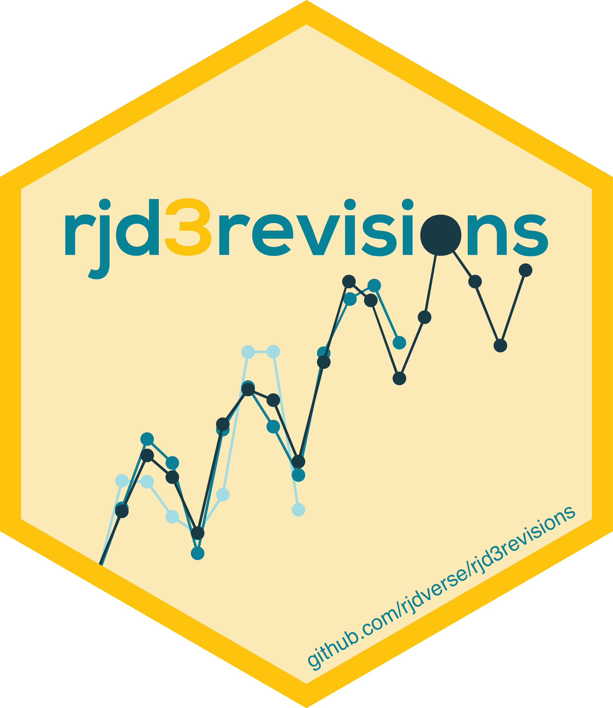

rjd3revisions 


Most economic indicators are published several times for a given reporting period, this entails revisions as time horizon changes. rjd3revisions performs a battery of tests on these revisions and generates a report with the results. The various tests enable the users to detect potential bias and sources of inefficiency in preliminary estimates.
Installation
Running rjd3 packages requires Java 17 or higher. How to set up such a configuration in R is explained here
To get the current stable version (from the latest release):
# install.packages("remotes")
remotes::install_github("rjdverse/rjd3toolkit@*release")
remotes::install_github("rjdverse/rjd3revisions@*release", build_vignettes = TRUE)To get the current development version from GitHub:
# install.packages("remotes")
remotes::install_github("rjdverse/rjd3revisions", build_vignettes = TRUE)Usage
First you need to get your input data set as a data.frame in R in a specific format as below. Note that missing values can either be mentioned as NA (as in the example below) or not be included in the input at the best convenience of the user.
Format 1: long view
| rev_date | time_period | obs_values |
|---|---|---|
| 2022-07-31 | 2022Q1 | 0.8 |
| 2022-07-31 | 2022Q2 | 0.2 |
| 2022-07-31 | 2022Q3 | NA |
| 2022-07-31 | 2022Q4 | NA |
| 2022-08-31 | 2022Q1 | 0.8 |
| … | … | … |
Format 2: vertical view
| Period | 2023/03/31 | 2023/04/30 | 2023/05/31 |
|---|---|---|---|
| 2022M01 | 15.2 | 15.1 | 15.0 |
| 2022M02 | 15.0 | 14.9 | 14.9 |
| … | … | … | … |
| 2023M01 | 13.0 | 13.1 | 13.2 |
| 2023M02 | 12.1 | 12.1 | |
| 2023M03 | 12.3 |
Format 3: horizontal view
| Period | 2022M01 | 2022M02 | … | 2023M01 | 2023M02 | 2023M03 |
|---|---|---|---|---|---|---|
| 2023/03/31 | 15.2 | 15.0 | … | 13.0 | ||
| 2023/04/30 | 15.1 | 14.9 | … | 13.1 | 12.1 | |
| 2023/05/31 | 15.0 | 14.9 | … | 13.2 | 12.1 | 12.3 |
Depending on the location of your input data, you can use create_vintages_from_xlsx() or create_vintages_from_csv(), or the more generic function create_vintages() to create the vintages.
# Examples
# Long format
long_view <- data.frame(
rev_date = rep(x = c("2022-07-31", "2022-08-31", "2022-09-30", "2022-10-31",
"2022-11-30", "2022-12-31", "2023-01-31", "2023-02-28"),
each = 4L),
time_period = rep(x = c("2022Q1", "2022Q2", "2022Q3", "2022Q4"), times = 8L),
obs_values = c(
.8, .2, NA, NA, .8, .1, NA, NA,
.7, .1, NA, NA, .7, .2, .5, NA,
.7, .2, .5, NA, .7, .3, .7, NA,
.7, .2, .7, .4, .7, .3, .7, .3
)
)
# Horizontal format
horizontal_view <- matrix(data = c(.8, .8, .7, .7, .7, .7, .7, .7, .2, .1,
.1, .2, .2, .3, .2, .3, NA, NA, NA, .5, .5, .7, .7,
.7, NA, NA, NA, NA, NA, NA, .4, .3),
ncol = 4)
colnames(horizontal_view) <- c("2022Q1", "2022Q2", "2022Q3", "2022Q4")
rownames(horizontal_view) <- c("2022-07-31", "2022-08-31", "2022-09-30", "2022-10-31",
"2022-11-30", "2022-12-31", "2023-01-31", "2023-02-28")
# Vertical format
vertical_view <- matrix(data = c(.8, .2, NA, NA, .8, .1, NA, NA, .7, .1, NA,
NA, .7, .2, .5, NA, .7, .2, .5, NA, .7, .3, .7, NA,
.7, .2, .7, .4, .7, .3, .7, .3),
nrow = 4)
rownames(vertical_view) <- c("2022Q1", "2022Q2", "2022Q3", "2022Q4")
colnames(vertical_view) <- c("2022-07-31", "2022-08-31", "2022-09-30", "2022-10-31",
"2022-11-30", "2022-12-31", "2023-01-31", "2023-02-28")Then you can create your vintages, inspect revisions (optional) and make the analysis
library("rjd3revisions")
vintages <- create_vintages(long_view, periodicity = 4)
# revisions <- get_revisions(vintages, gap = 2)
# plot(revisions)
rslt <- revision_analysis(vintages, gap = 1, view = "diagonal", n.releases = 3)
#> Warning: Slope and drift could not be performed
#> Warning: efficiencyModel1 could not be performed
#> Warning: efficiencyModel2 could not be performed
#> Warning: orthogonallyModel1 could not be performed
#> Warning: orthogonallyModel2 could not be performedFinally to create a report and get a summary of the results, you can use
render_report(
rslt,
output_file = "my_report",
output_dir = tempdir(),
output_format = "pdf_document"
)
summary(rslt)
print(rslt)Additional information
This README.md file gives you a quick example of how to proceed. Consult the vignette (with browseVignettes("rjd3revisions")) and the documentation of each function (for example: ?create_vintages, ?revision_analysis) to see the current possibilities of the tool.
Package Maintenance and contributing
Any contribution is welcome and should be done through pull requests and/or issues. pull requests should include updated tests and updated documentation. If functionality is changed, docstrings should be added or updated.
Licensing
The code of this project is licensed under the European Union Public Licence (EUPL).